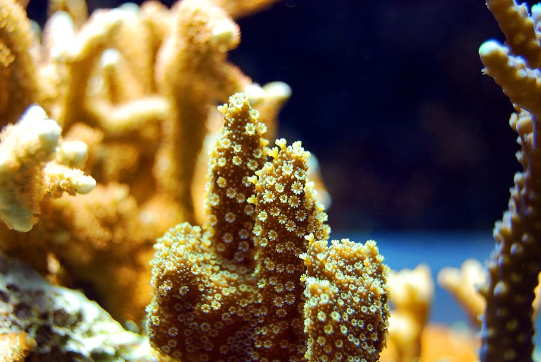

Korálový útes
Korálové útesy jsou nejbohatší ekosystém na Zemi. Rostou v mělkých tropických mořích a zaujímají jen necelé jedno procento povrchu oceánů — přesto hostí 25 % všech mořských druhů živočichů a rostlin. Dnes jsou ale vážně ohroženy.
Útesotvorný korál je společenství mikroskopických živočichů — polypů — kteří dohromady vytváří pevnou schránku z uhličitanu vápenatého. Velikost jednoho polypa je přibližně 2 mm. Polypi jsou propojeni tkání a dohromady budují vápencovou strukturu, do které se dokáží stáhnout. Jak kolonie roste, přerůstá a opouští své starší části — ty se stávají základním stavebním kamenem útesu. Nejčastějším útesotvorným korálem je rod větevník (Acropora), jehož kolonie tvoří různě silné a dlouhé větve. Některé druhy Acropor mohou růst i o více než 10 cm za rok.

Koráli rostou jen velmi pomalu — běžné tempo je několik centimetrů až desítek centimetrů za rok. Útesy jsou přesto běžně desítky metrů vysoké, nejvyšší přesahuje 500 metrů. Takové útvary rostou statisíce let. Velký bariérový útes — největší korálový útvar světa a jediný biologický útvar viditelný z vesmíru — je přibližně 600 000 let starý.

Drtivá většina korálových útesů na světě čelí fatálnímu ohrožení. Polypi korálu žijí v symbióze se sinicemi zvanými zooxantelly, které jim propůjčují schopnost fotosyntézy. Zooxantelly jsou však extrémně citlivé na teplotu vody. Pokud teplota překročí kritickou mez, symbionti hynou — korál ztrácí veškeré zbarvení a bělí se. Vybělený korál je oslabený a brzy hyne. Útes mrtvých korálů zarůstá řasou a naprosto ztrácí svoji biodiverzitu.